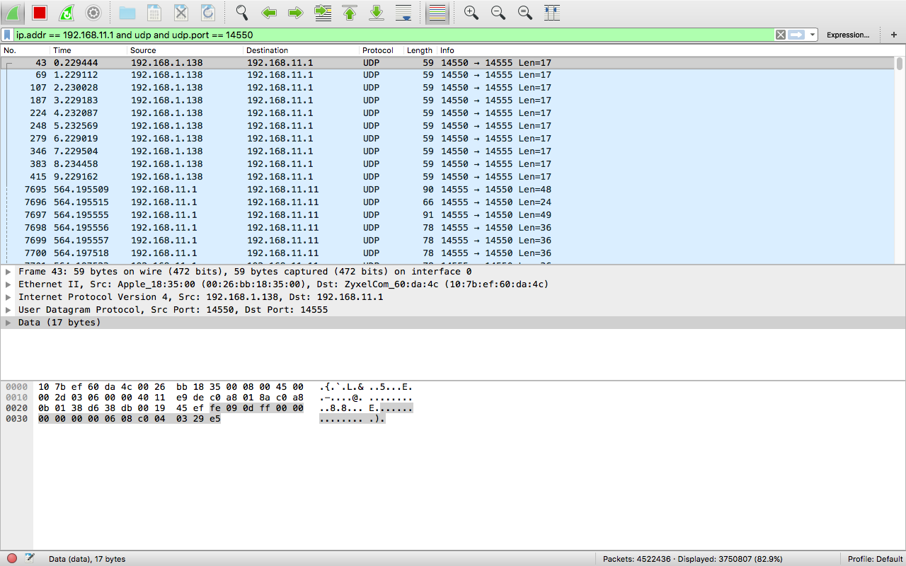
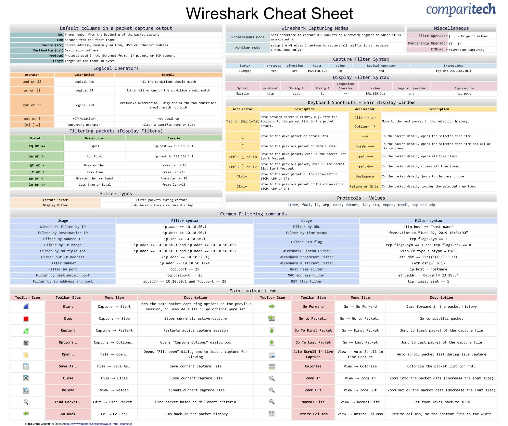

Programming, electronics, lifestyle

Пример условия для мониторинга udp пакетов (отправляемых/получаемых на порт 14550) с помощью Wireshark:
ip.addr == 192.168.11.1 and udp and udp.port == 14550

# сканирование портов
nmap -p 80 X.X.X.X
nmap -p 1-65535 localhost
nmap -p 80,443 8.8.8.8
# обычное сканирование хоста
nmap 1.1.1.1
nmap 1.1.1.1 8.8.8.8
nmap 1.1.1.1,2,3,4
nmap 8.8.8.0/28
nmap 8.8.8.*
nmap -p 8.8.8.* --exclude 8.8.8.1
nmap -iL list.txt # лист с хостами в файле
# сканирование хостов путем пинга
nmap -sp 192.168.5.0/24
# сохранить результат сканирование в файл
nmap -oN output.txt securitytrails.com # plain text
nmap -oX output.xml securitytrails.com # xml
# отключение резолва DNS для ускорения сканирования `-n`
nmap -p 80 -n 8.8.8.8
# быстрое сканирование ОС и сервиса `-A` + `-T4`
nmap -A -T4 cloudflare.com
# сканирование версии сервиса/демона
nmap -sV localhost
# сканирование tcp/udp
nmap -sT 192.168.1.1
nmap -sU localhost
# поиск известнвых CVE уязвимостей с помощью скрипта
nmap -Pn --script vuln 192.168.1.105
# DDOS атака с помощью nmap
nmap 192.168.1.105 -max-parallelism 800 -Pn --script http-slowloris --script-args http-slowloris.runforever=true
# Brute force атака Wordpress
nmap -sV --script http-wordpress-brute --script-args 'userdb=users.txt,passdb=passwds.txt,http-wordpress-brute.hostname=domain.com, http-wordpress-brute.threads=3,brute.firstonly=true' 192.168.1.105
# Brute force атака MS-SQL
nmap -p 1433 --script ms-sql-brute --script-args userdb=customuser.txt,passdb=custompass.txt 192.168.1.105
# Brute force атака FTP
nmap --script ftp-brute -p 21 192.168.1.105
# Поиск backdoor/malware infections
nmap -sV --script=http-malware-host 192.168.1.105 # common
nmap -p80 --script http-google-malware infectedsite.com # google clock malware
Сторонняя шпаргалка по nmap – Ignitetechnologies/Mindmap.
# указать интерфейс
tcpdump -i eth0
# ограничить количество захватываемых пакетов до 5
tcpdump -c 5 -i eth0
# вывести захваченные данные в ASCII
tcpdump -A -i eth0
# вывести доступные интерфейсы
tcpdump -D
# вывести захваченные данные в HEX и ASCII
tcpdump -XX -i eth0
# сохранить захваченные данные в файл в pcap формате
tcpdump -w 0001.pcap -i eth0
# вывести данные из файла в pcap формате
tcpdump -r 0001.pcap
# захватывать IP адрес
tcpdump -n -i eth0
# захватывать только tcp пакеты
tcpdump -i eth0 tcp
# захватывать только пакеты которые идут от/на 22 порт
tcpdump -i eth0 port 22
# захватывать только пакеты которые идут с конкретного IP
tcpdump -i eth0 src 192.168.0.2
# захватывать только пакеты которые идут на конкретный IP
tcpdump -i eth0 dest 192.168.0.4
Помимо
netstatдля проверки какая программа использует какой порт могут применяться также следующие утилитыss,lsof. А также с помощьюnmap, однако тут мы сканируем с сетевой стороны, а не со стороны ОС, как в предыдущих случаях.
Источник: 4 способа узнать, какие порты прослушиваются в Linux (открыты).
Немного теории порт – логический объект, который используется для связи в сетевых соединениях. Порт может находиться в одном из 4х состояний:
Если порт открыт, программное обеспечение прослушивает соединения и пакеты.
от англ. Network Statistics
sudo netstat -ltupan
l – выводит на экран все прослушивающиеся сокеты (сочетания IP-адреса и номера порта)t – указывает, что нужно показать все TCP-соединения сетевой подсистемыu – указывает, что нужно показать UDP-соединения сетевой подсистемыp –a – показывает только активные соединенияn – вместо названий служб показывает номера портовот англ. Socket Statistics
sudo ss -lntup
l – выводит на экран все прослушивающиеся сокетыn – вместо названий служб показывает номера портовt – указывает, что нужно показать все TCP-соединения сетевой подсистемыu – указывает, что нужно показать UDP-соединения сетевой подсистемыp – показать PID процессовот англ. LiSt of Open Files
Утилита для отображения файлов, использующихся процессами.
sudo lsof -i
-i – для листинга network файлов:80Кстати много в выводе у меня вместо порта встречается
http-alt, a такжеbootpc,ssh. Найти соответствие вы можете в файле/etc/services.